Про кухню В'єтнаму
В’єтнамська кухня відома своєю легкістю, свіжістю інгредієнтів і гармонійним поєднанням смаків: солодкого, кислого, солоного та гострого. Основу складають рис, рисова локшина, морепродукти, свинина, курятина та яловичина, доповнені ароматними травами, такими як кінза, м'ята, базилік і лемонграс. Популярні страви включають фо (рисовий суп із яловичиною або куркою), нем (смажені рулети), банх ми (в’єтнамський багет) та бунча (локшина з грильованою свининою). Кухня акцентує на свіжості, мінімальній обробці продуктів і використанні соусів, як-от нуок мам (рибний соус).
Виберіть країну
↑ Вгору
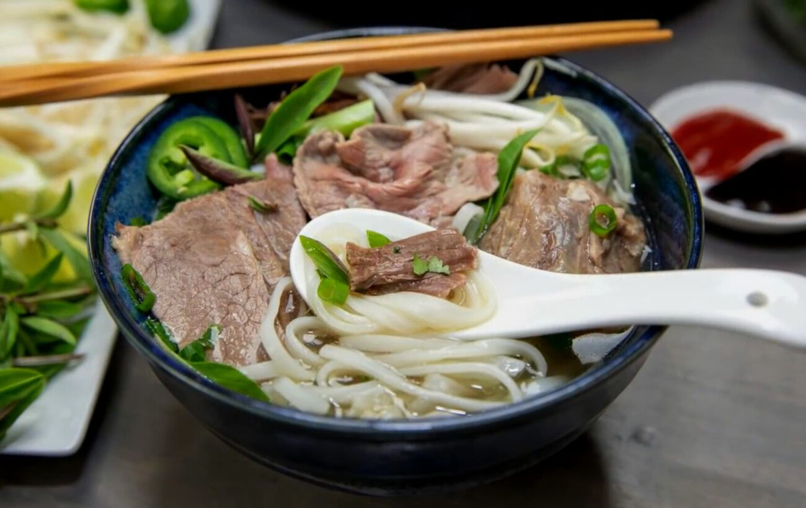
ФоТрадиційний в'єтнамський суп на основі ароматного бульйону, який подається з рисовою локшиною, ніжними шматочками яловичини або курятини, а також свіжими травами, зеленню та зазвичай лимоном та чилі. Суп має багатий, глибокий смак і часто доповнюється соусом для пікантності.
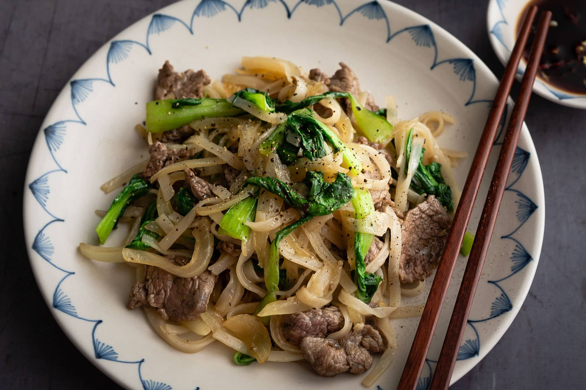
Фо саоВаріація класичного в'єтнамського супу фо, що складається з рисової локшини, приготованої в ароматному бульйоні з яловичини або курятини. Локшина в цій страві має більш тонку текстуру, а суп подається з м'ясом, свіжими травами, зеленню та додається соус для додаткового смаку.
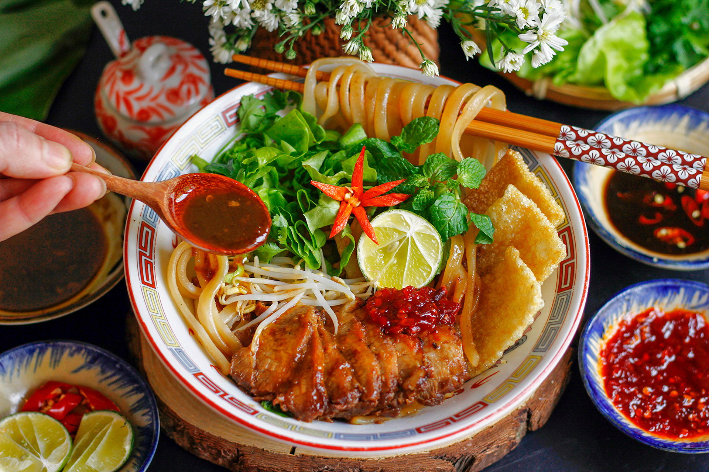
Цао лауТрадиційна в'єтнамська страва з Хойану, що складається з широкої рисової локшини, свіжих овочів, смаженого м'яса (зазвичай свинини) та хрустких рисових коржів. Все це заливають ароматним бульйоном з прянощами, надаючи страві глибокий смак і текстуру.

Бун бо ХюеПікантний суп з рисовою локшиною, приготований на основі насиченого бульйону з яловичини та свинини, з додаванням аромату лимонного трав'яного кореня та чилі. Страва подається з м'ясом, свіжими овочами, ароматними травами та рисовими коржами, що додають хрусткості.
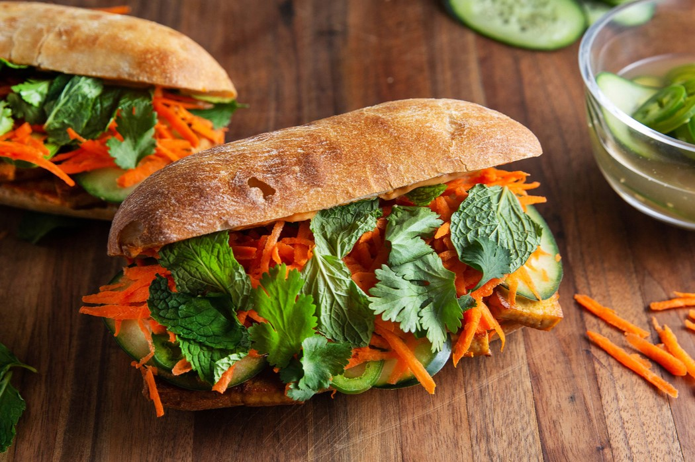
Бань міВ'єтнамський сендвіч, який поєднує хрусткий багет із різноманітними начинками, такими як смажене м'ясо (свиняче, куряче або яловиче), паштет, свіжі овочі, коріандр і мариновані огірки. Все це доповнюється гострим соусом для балансу смаків.

Бань сеоВ'Смажені млинці, приготовані з рисового борошна, кокосового молока та куркуми, що надає їм яскравий жовтий колір. Їх наповнюють свининою, креветками, пророщеними бобами та овочами, після чого загортаються і подаються з свіжими травами та соусом.
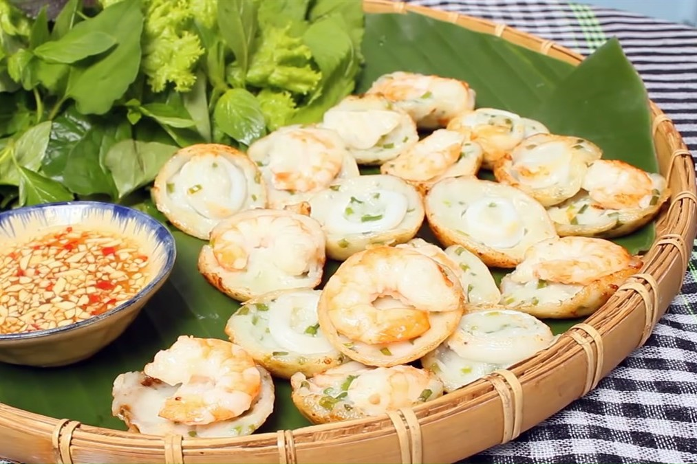
Бань котСтрава, що складаєтсья з маленьких парових млинців з рисового борошна, начинених свининою, креветками та спеціями. Млинці мають ніжну текстуру і зазвичай подаються з ароматним соусом і свіжими травами.
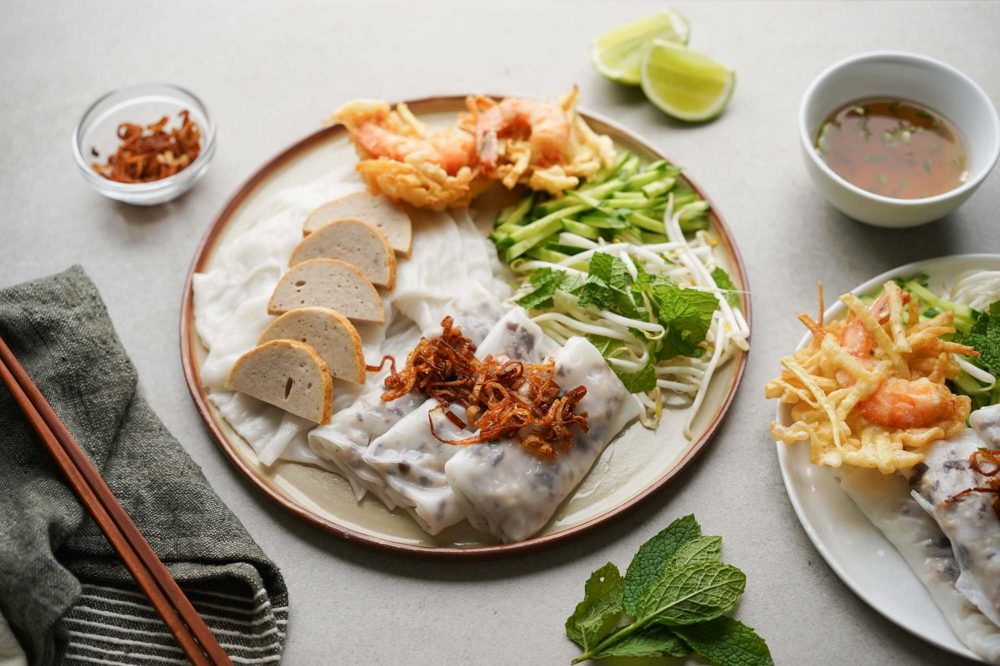
Бань куонТрадиційна в'єтнамська страва з тонких парових млинців із рисового борошна, начинених свининим фаршем, грибами та спеціями. Подається з хрусткою смаженою цибулею, свіжими травами та ніжним рибним соусом для занурення.
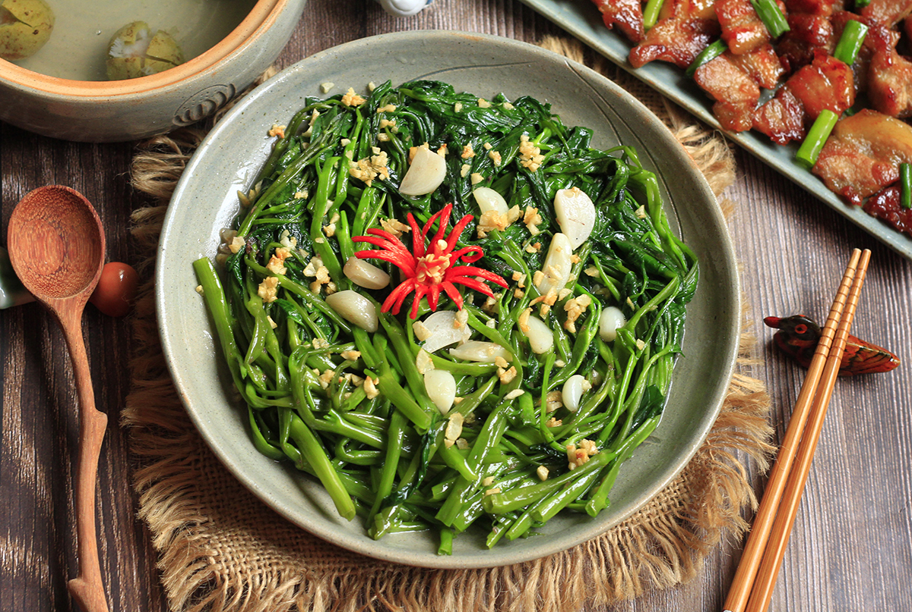
Рау муонгПроста і популярна в'єтнамська страва з водяного шпинату, обсмаженого з часником, соєвим або рибним соусом. Страва має насичений аромат і зазвичай подається як гарнір до основних страв.
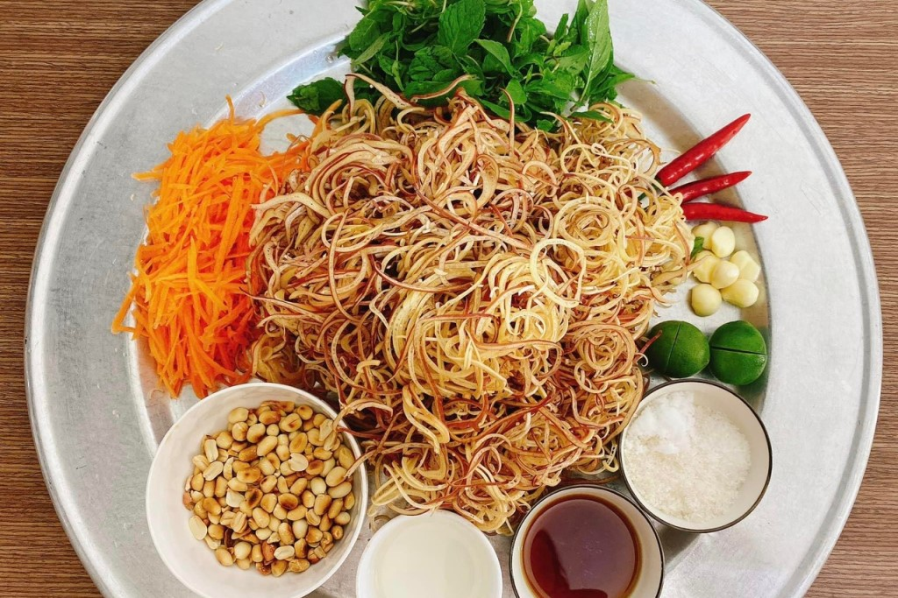
Ном хоа чуойТрадиційний салат із бананових квітів, тонко нарізаних і змішаних із курятиною або креветками, морквою, зеленню, арахісом і ароматною заправкою з рибного соусу, лаймового соку та чилі. Страва має свіжий, кисло-солодкий смак.
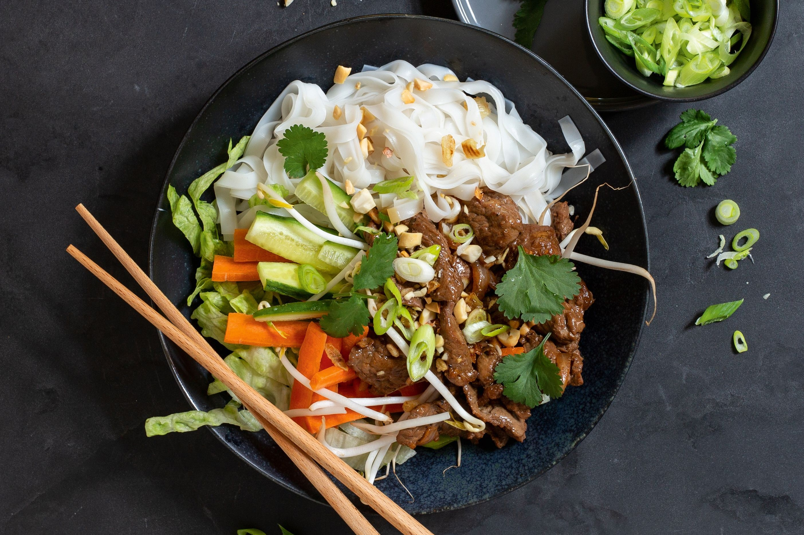
Бун бо нам боСтрава, що складається з рисової локшини, смаженої яловичини, свіжих овочів, зелені та хрусткого арахісу. Все це заправляється ароматним соусом із рибного соусу, лайму та часнику.
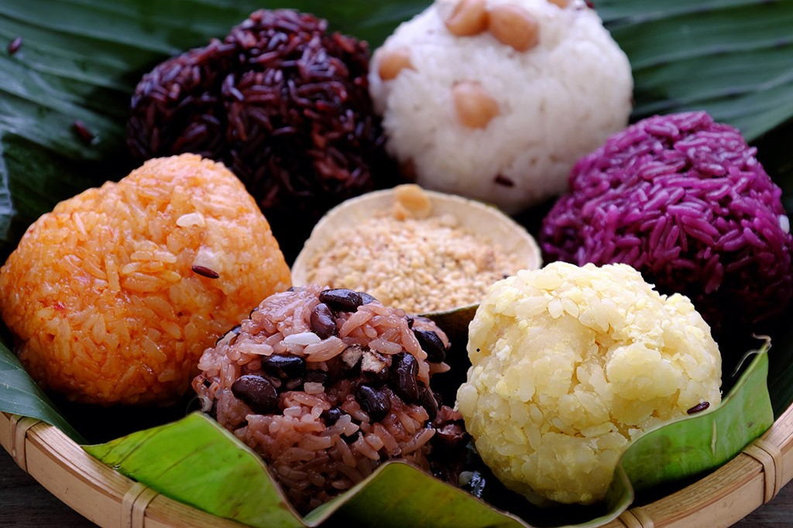
СойТрадиційна в'єтнамська страва з клейкого рису, який готується на парі та змішується з різноманітними додатками, такими як маринована свинина, курятина, сушені креветки, зелена цибуля або смажена цибля. Страва може бути як солоною, так і солодкою.
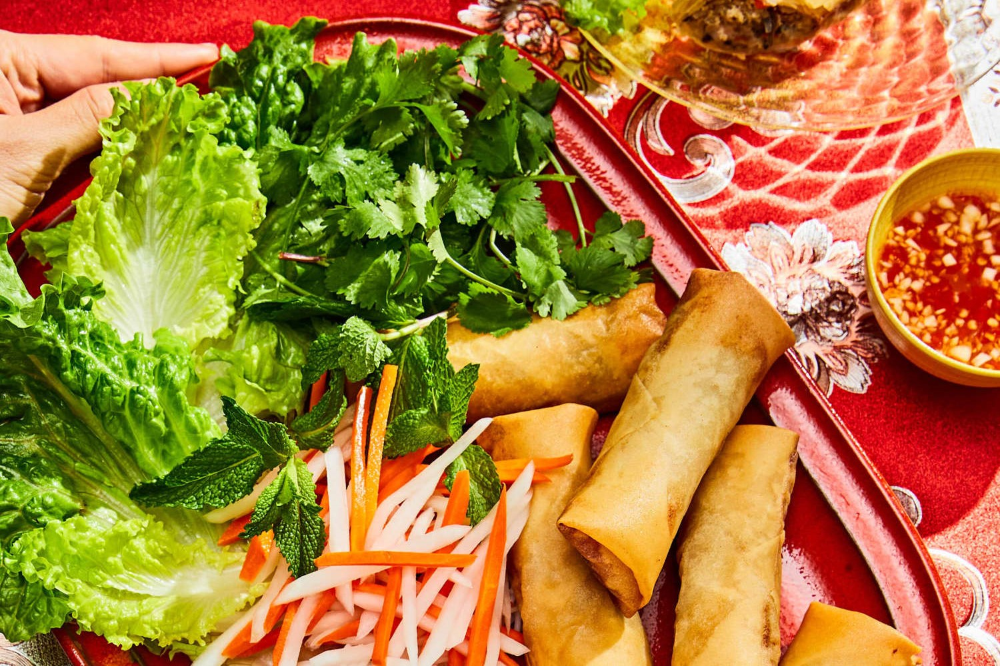
Смажені спринг-ролиПопулярна закуска, яка складається з тонких рисових листів, начинених сумішшю фаршу, овочів і вермішелі. Роли смажать до золотистої скоринки й подають із ароматним рибним соусом для занурення.
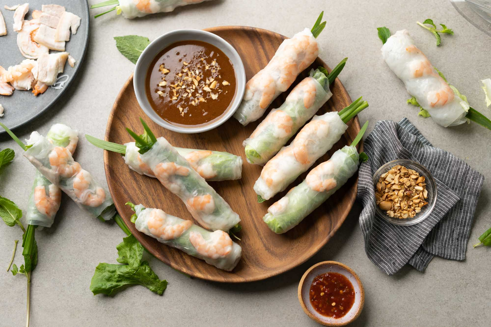
Свіжі спринг-ролистрава, що складається з рисових листів, у яких загортаються свіжі овочі, злегка обсмажені креветки або курка, вермішель та зелень. Роли подаються з соусом на основі рибного соусу, часнику та чилі для додаткового аромату.
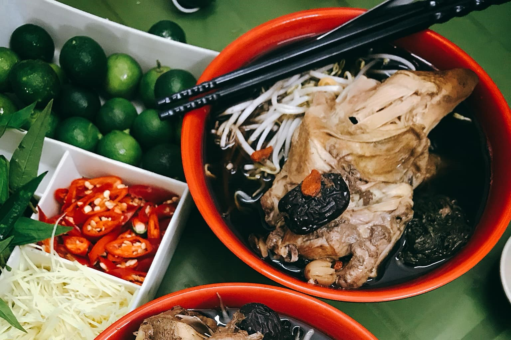
Курячий супВ'єтнамська страва, що складається з вареної курки, приготованої з ароматними спеціями, такими як імбир, часник та лемонграс. Курка подається з рисом або локшиною та зазвичай доповнюється соусом або бульйоном для більш глибокого смаку.
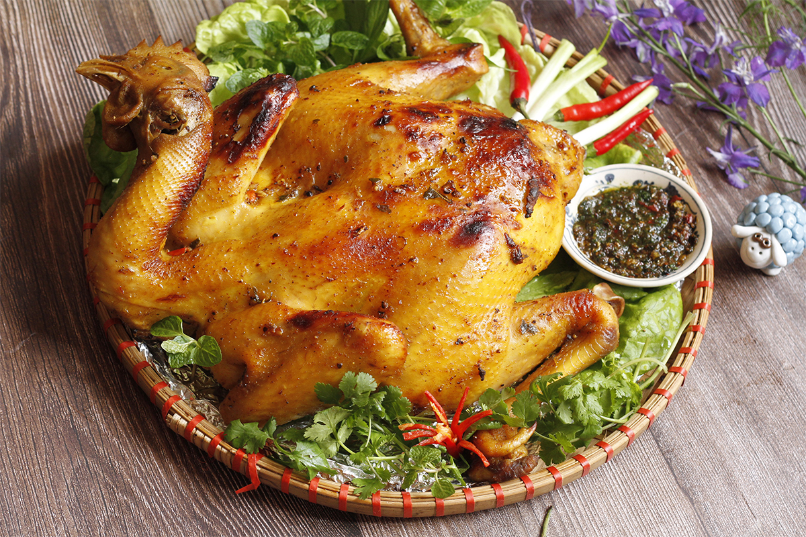
Смажена куркаКурка, замаринована в суміші соєвого соусу, часнику, лимонного трав'яного соку та спецій, що потім смажиться до золотистої скоринки. Подається з рисом, свіжими овочами та соусом для занурення, що додає страві пікантності.
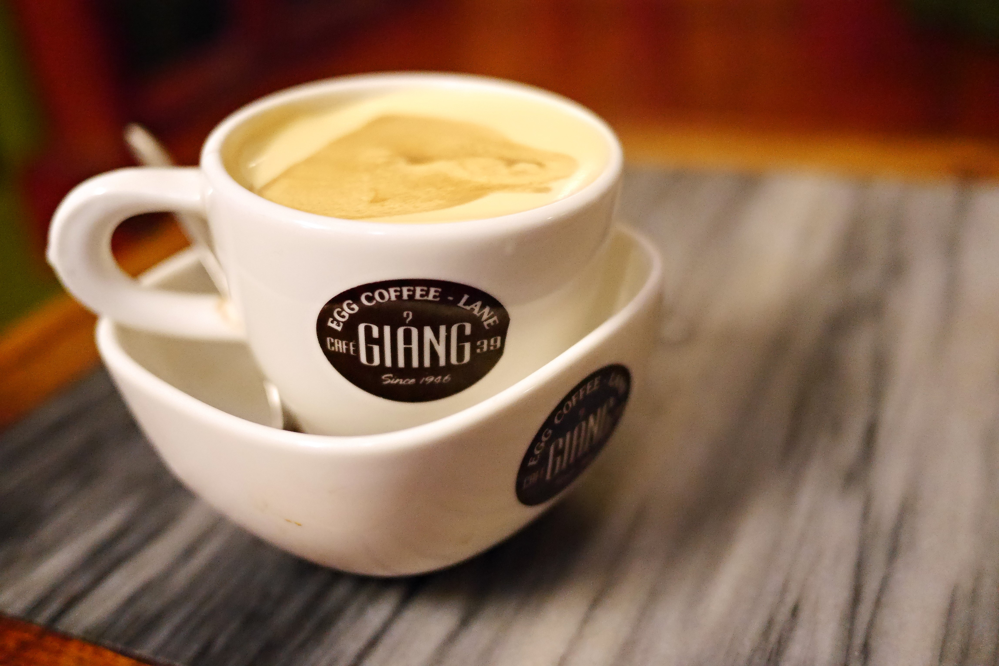
Кава з яйцемУнікальний в'єтнамський напій, що складається з міцної кави, заправленої кремом з яєчних жовтків, цукру та згущеного молока. Напій має насичений смак кави з ніжною, солодкою та кремовою текстурою, що робить його справжнім делікатесом.
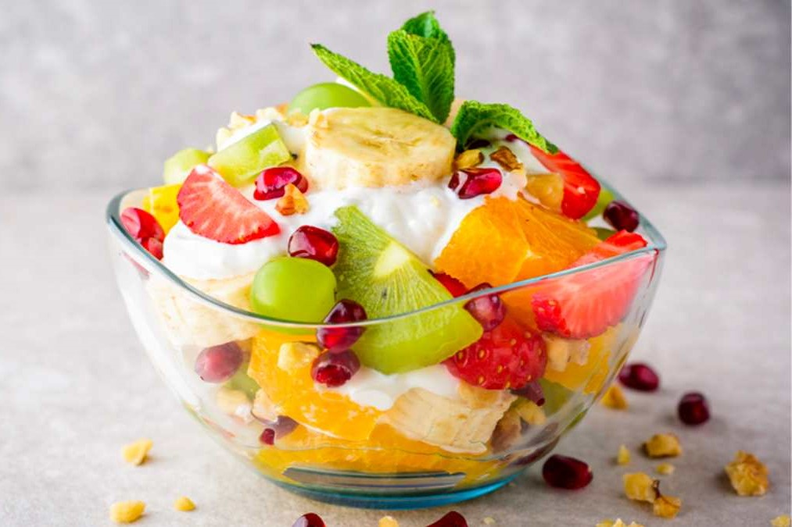
Фруктовий салатВ'єтнамський десерт, що складається з різноманітних свіжих фруктів, таких як манго, папая, ананас, банани та авокадо, заливаються солодким сиропом із льоду, згущеного молока або йогурту. Часто подається з чутливими нотками чилі для контрасту смаків.
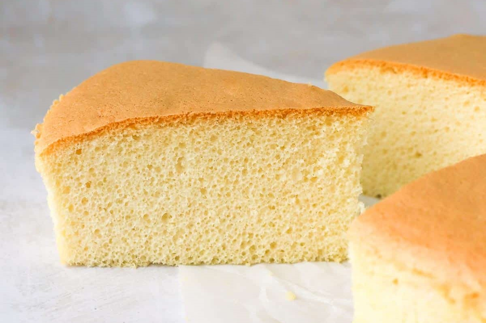
Бісквітний тортЛегкий і повітряний в'єтнамський десерт, схожий на бісквіт, який має м’яку текстуру та солодкий смак. Торт зазвичай готується з яєць, борошна, цукру та ванілі, і часто подається як самостійний десерт або з фруктами та кремом.
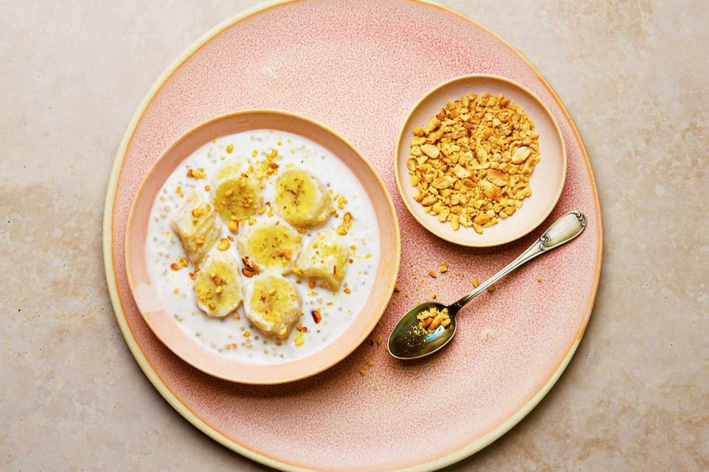
Банановий пудингДесерт, що складається з бананів, приготованих у кокосовому молоці з додаванням клейкого рису та цукру. Пудинг має кремову текстуру та солодкий смак, іноді з додаванням манго чи інших фруктів для більшого аромату.